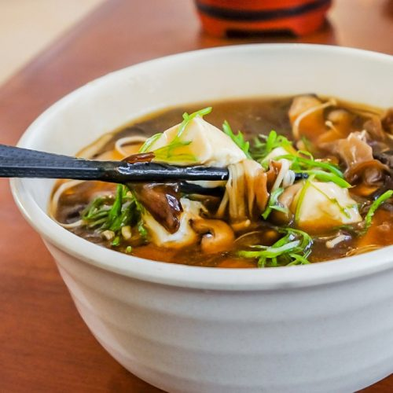

SOUPS

Noodle Soup With Tofu
You only need 20 minutes to make this quick, noodle soup made with tofu and spring onions. Plus, it’s low in calories and salt.
Serves: 4
Time to make: 20 mins
Hands-on time: 10 mins
Nutrition Info (per serve)
Calories : 193cal
Kilojoules : 808kJ
Protein : 11.2g
Total fat : 4.2g
Saturated fat : 0.6g
Carbohydrates : 25.9g
Sugars : 3.1g
Dietary fibre : 2.9g
Sodium : 866mg
Calcium : 406mg
Iron : 2.7mg
Ingredients
250g firm tofu, cut into 1cm thick chunks
3 tablespoons oyster sauce spray oil
2 teaspoons reduced-salt vegetable stock powder
¼ cup root ginger, peeled and sliced
3 tablespoons mirin (rice wine) or sweet sherry
2 teaspoons reduced-salt soy sauce
2 heads bok choy, trimmed and leaves separated
600g medium egg noodles, cooked
100g spinach
½ red chilli, deseeded and thinly sliced
6 spring onions, shredded
Instructions
1. Pat the tofu cubes dry on kitchen paper. Mix with the oyster sauce and set aside for 10 min. Spray a non-stick frying pan with oil, add the tofu and cook over a high heat for a few min, until browned. Set aside.
2. Put the stock powder, ginger, mirin and soy sauce in a large pan with five cups boiling water and bring to the boil. Reduce the heat to low and simmer for 2–3 min.
3. Add the pak choy and simmer for 1–2 min, until bright green. Add the noodles and spring onions, reserving a few onions, and return to the boil. Remove from the heat and stir in the spinach and tofu.
4. To serve, divide among four serving bowls and top with the chilli and reserved spring onions.